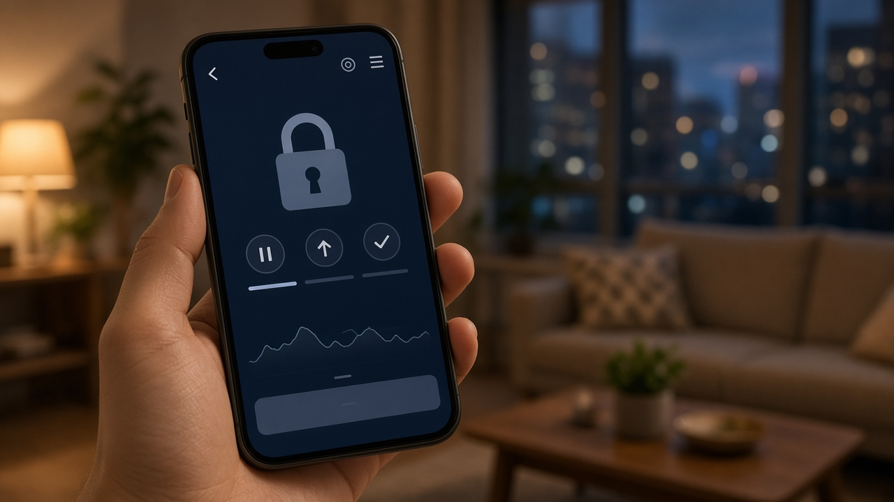
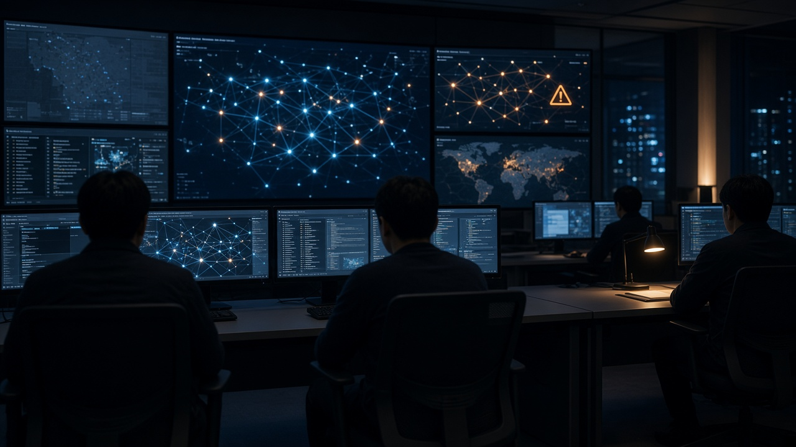
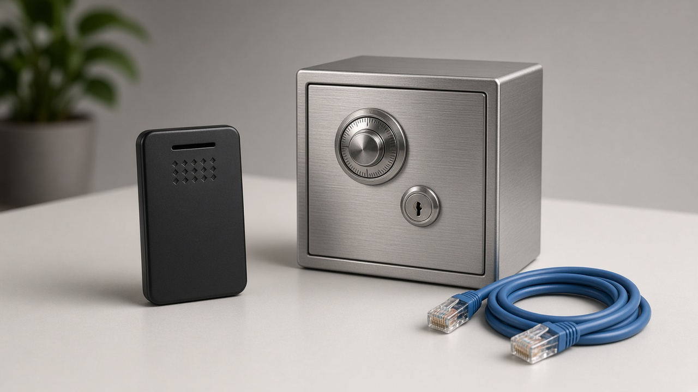

코인 거래소 해킹 의심만 돼도 입출금 먼저 막는다, 금융위 보안 대책에서 투자자가 볼 부분

코인 거래소 앱을 열었는데 갑자기 입금이나 출금이 멈춰 있으면 덜컥 겁부터 나죠.
최근 국내외 거래소에서 해킹과 정보 유출 소식이 이어지면서, 내 코인이 거래소 안에서 정말 안전한지 궁금해하시는 분들이 많아졌어요.
금융위원회가 11월 12일 가상자산업권 보안 대책회의를 열고, 해킹이 의심되는 단계에서도 거래소가 먼저 입출금을 막을 수 있게 하는 등 보안 강화 방안을 내놨어요.
무엇이 달라지는지, 이용자 입장에서 어떤 의미가 있는지, 앞으로 무엇을 지켜보면 좋을지 차례로 정리해 볼게요.
해킹 의심 단계에서도 입출금 차단을 허용하기로 했어요
이번 발표에서 이용자에게 가장 직접 와닿는 부분은 입출금 차단 기준이에요.
지금 가상자산이용자보호법은 거래소가 정당한 사유 없이 입출금을 막지 못하게 하고, 해킹 사고가 명백할 때만 차단을 허용하고 있어요.
그래서 이상한 거래가 보이는 의심 단계에서 먼저 막아도 되는지가 분명하지 않다는 업계 의견이 있었어요.
금융위는 가상자산 보안 사고는 빠르게 막는 게 피해를 줄이는 데 결정적이라고 보고, 해킹이나 침해 사고가 의심되면 거래소가 선제적으로 입출금을 차단할 수 있도록 비조치 의견서를 내주기로 했어요.
비조치 의견서는 규정상 문제가 될 수 있는 행동이라도 당국이 제재하지 않겠다고 미리 확인해 주는 문서예요.
결국 앞으로는 거래소 공지 없이 입출금이 잠시 멈추는 일이 생기더라도, 그게 피해 확산을 막기 위한 조치일 수 있다는 뜻이에요.

24시간 감시가 어려운 거래소는 입출금 시간이 정해질 수 있어요
금융위는 법이 만들어지기 전에 바로 적용할 보안 사고 비상 대응 가이드라인도 함께 마련했어요.
코인 시장은 하루 24시간 일주일 내내 돌아가니까, 거래소도 담당 인력을 늘 배치해서 비정상적인 대규모 거래 같은 이상 징후가 보이면 곧바로 통제 조치를 하라는 내용이에요.
눈여겨볼 부분은 그 다음이에요.
상시 감시 체계를 운영하기 어려운 거래소는 그 체계가 제대로 돌아가는 시간에만 입출금을 처리하고, 이를 이용자에게 미리 알려야 해요.
그러니 작은 거래소를 쓰고 계신다면 앞으로 입출금 가능 시간이 따로 공지될 수 있다는 점을 알아 두시면 좋아요.
급하게 출금해야 할 일이 생겼을 때 당황하지 않도록, 쓰는 거래소의 공지사항을 한 번씩 확인해 두세요.
콜드월렛 비중과 보상 준비금도 더 늘리라고 했어요
콜드월렛은 인터넷과 분리해서 보관하는 지갑이라 해킹에 상대적으로 안전한 쪽이에요.
반대로 인터넷에 연결된 핫월렛은 입출금을 빠르게 처리할 수 있지만 그만큼 공격에 노출되기 쉬워요.
현재 가상자산업감독규정상 거래소는 이용자 자산의 80퍼센트 이상을 콜드월렛에 보관해야 하고, 전체 사업자 평균은 이미 95퍼센트를 넘는다고 해요.
그래도 금융위는 핫월렛에 두는 이용자 코인을 거래에 꼭 필요한 최소 수량으로 줄이고, 여러 핫월렛에 나눠 보관하는 방안도 고려하라고 했어요.
또 해킹으로 이용자 피해가 생겼을 때 보상이 제대로 이뤄질 수 있도록 보험 보상 한도와 준비금 적립액을 충분히 늘리라고 요구했어요.
다만 이건 가이드라인 단계의 요구라서, 거래소마다 실제로 얼마나 늘릴지는 앞으로 지켜봐야 해요.

작은 거래소 보안 점검과 디지털자산법이 다음 단계예요
현재 28개 가상자산사업자 가운데 금융보안원에 회원사로 가입한 곳은 원화마켓 거래소 5곳뿐이에요.
금융위는 나머지 사업자도 가입을 추진해 침해 위협 정보 공유, 보안 취약점 점검, 보안 교육 같은 지원을 금융회사와 같은 수준으로 받게 하고, 가입이 어려운 곳은 중소 금융회사 수준으로 지원하겠다고 했어요.
지금 거래소는 정보보호 관리체계 인증 말고는 따로 받아야 하는 점검 의무가 없어서, 거래 검증 강화와 지갑 접근 통제 등을 담은 거래소 맞춤 보안 점검 기준을 연내 고치겠다는 계획도 나왔어요.
더 큰 변화는 준비 중인 디지털자산법이에요.
금융위는 이 법에 디지털자산업자, 지금의 가상자산사업자가 금융회사에 준하는 정보기술 안전성 확보 의무와 손해배상책임을 지도록 담겠다고 밝혔어요.
법이 실제로 언제 만들어지고 손해배상 범위가 어떻게 정해질지는 아직 정해지지 않았으니, 국회 논의 과정을 함께 보시는 게 좋아요.
이용자가 지금 챙겨 볼 것
먼저 내가 쓰는 거래소의 입출금 공지와 점검 안내를 자주 확인해 두세요.
갑자기 입출금이 멈췄다면 소문이나 단체 대화방 이야기보다 거래소 공식 공지부터 확인하는 게 순서예요.
그다음 거래소가 해킹 피해 보상과 관련해 어떤 보험이나 준비금을 갖추고 있는지 공시나 안내 자료를 살펴보시면 판단에 도움이 돼요.
그리고 이번 대책은 거래소의 보안을 높이려는 것이지 코인 가격이나 투자 결과를 지켜 주는 장치는 아니에요.
투자 판단은 늘 본인 상황에 맞게 신중하게 하시고, 피해가 의심되면 거래소 고객센터와 금융감독원 상담 창구를 통해 확인해 보세요.
참고 자료 금융위원회 2026년 11월 12일 보도자료 가상자산사업자에 대한 최고 수준의 보안 강화 조치를 통해 이용자의 자산과 정보를 철저히 지켜나가겠습니다, 연합뉴스 2026년 11월 12일 당국 해킹의심 때 가상자산거래소 입출금 선제 차단 허용, 한국경제 같은 날 가상자산 해킹 의심만 돼도 선제적으로 입출금 차단
태그 가상자산거래소 코인거래소해킹 입출금차단 콜드월렛 핫월렛 비조치의견서 디지털자산법 가상자산이용자보호법 금융위원회 코인투자